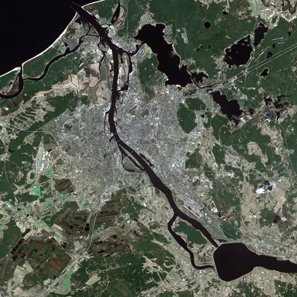
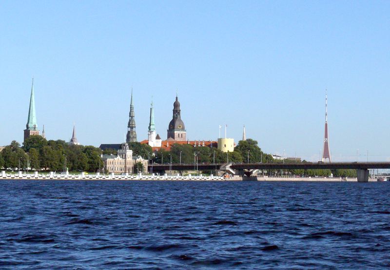

Rīgas pilsēta atrodas Latvijas centrālajā daļā, Rīgas līča dienvidu piekrastē, Viduslatvijas zemienē, Rīgavas un Tīreļu līdzenuma teritorijā, abos Daugavas krastos (teritoriju Daugavas kreisajā krastā sauc par Pārdaugavu). Robežojas ar Jūrmalas pilsētu, kā arī Mārupes, Olaines, Ķekavas, Salaspils, Ropažu un Ādažu novadiem. Rīga ir tipiska līdzenuma pilsēta ar atsevišķiem pauguriem, no kuriem augstākais ir Dzegužkalns — 26 metri virs jūras līmeņa. Vidējais virsmas augstums ir aptuveni 6 metri.
Izplatīti leduslaikmeta beigu posma un pēcleduslaikmeta Baltijas ledus ezera abrāzijas—akumulācijas, Litorīnas un Pēclitorīnas jūras un deltu akumulatīvie, upju erozijas un akumulatīvie veidojumi, pēcleduslaikmeta kāpas, purvi. Pārsvarā plakani vai viļņoti, vietām pārpurvoti līdzenumi, kas atrodas 1—11 metrus virs jūras līmeņa. Vietām stiepjas vairākus kilometrus garas, paugurainas kāpu grēdas un atsevišķi 1—3 hektārus lieli kāpu masīvi, kuru augstums 10—28 metri virs jūras līmeņa.
